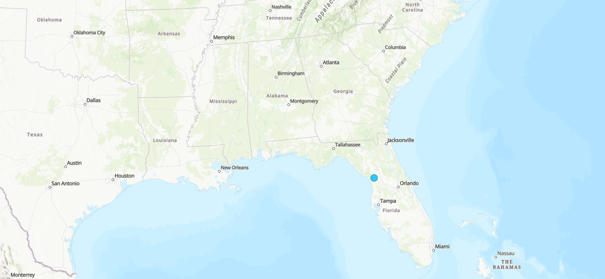
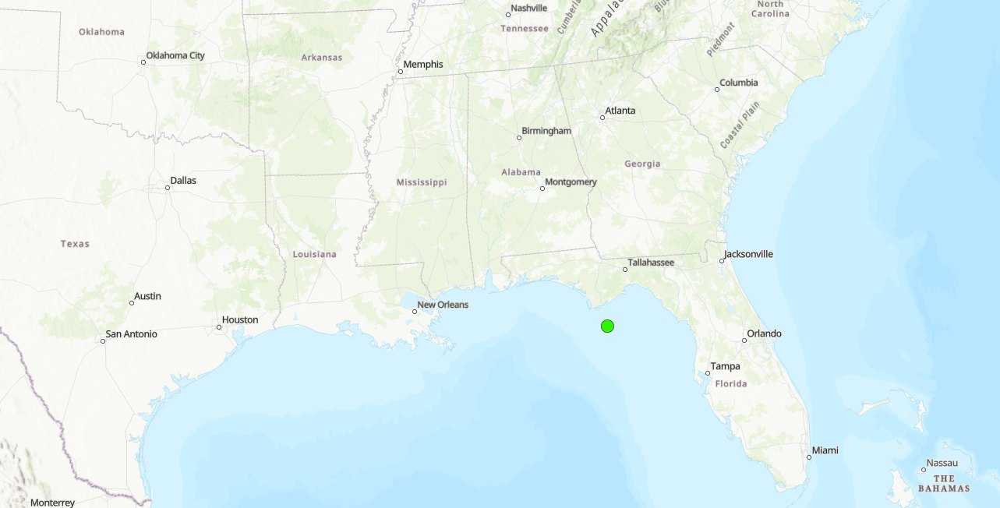
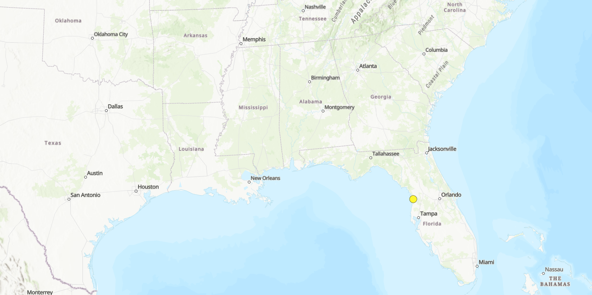
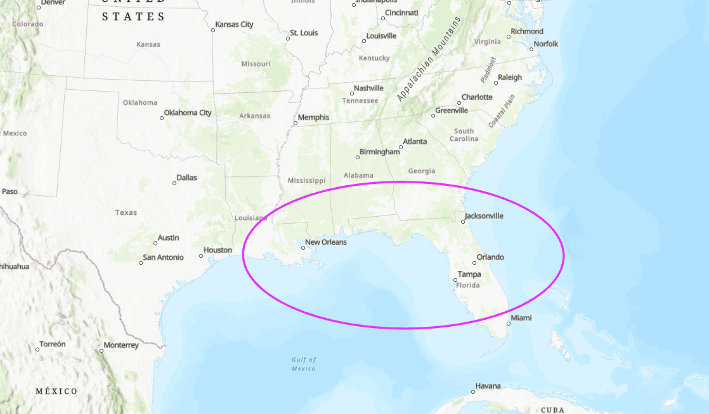
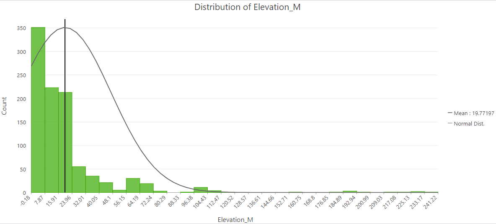
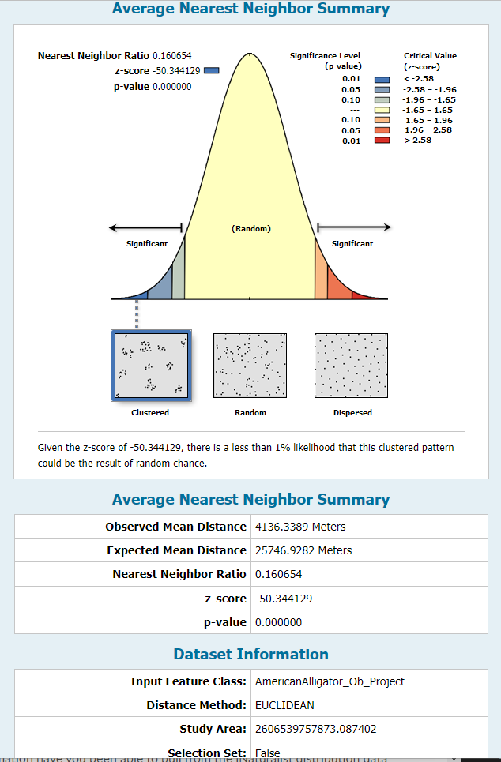

GIS Coursework / GIS II / American Alligator Habitat
American Alligator Habitat







Overview
Studied the geographic distribution of American alligator observations, finding a strong concentration along the Gulf Coast and a clear link between low elevation and habitat suitability.
Process
Ran Central Feature, Mean Center, Median Center, and Directional Distribution on observation points, then built an elevation histogram to compare habitat elevation patterns.